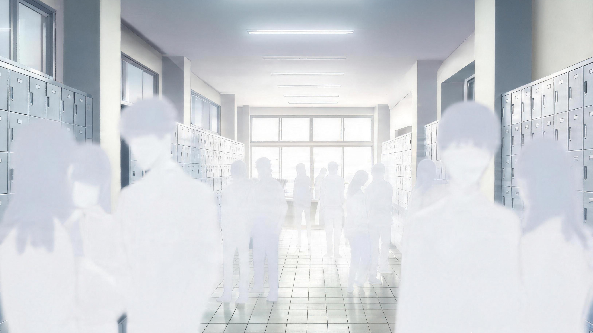
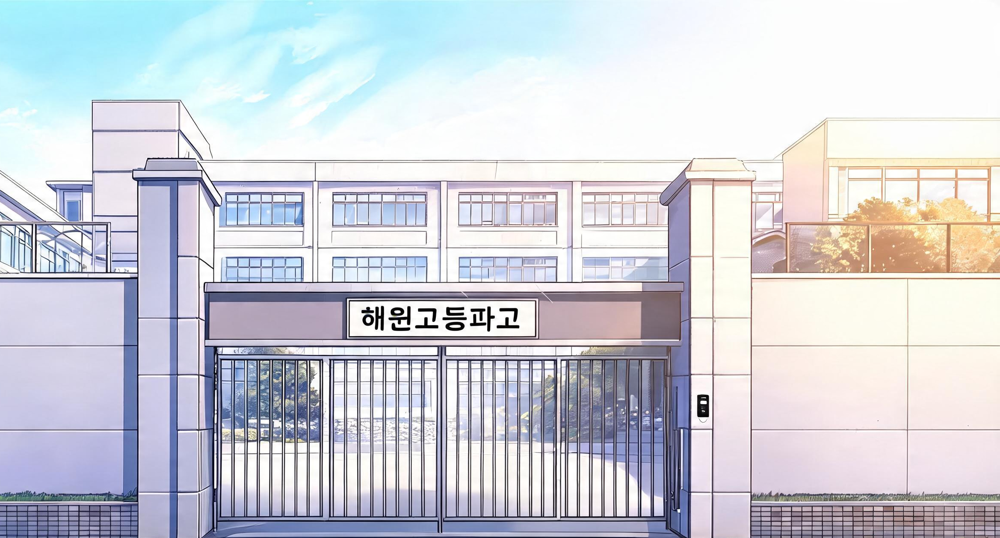
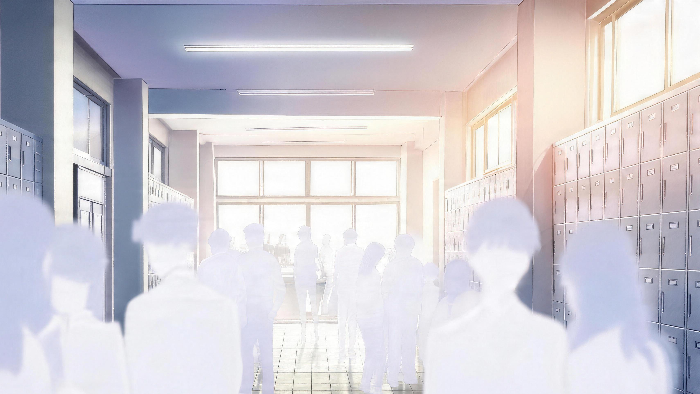

Senin pagi di SMA Haewon selalu dimulai dengan tiga hal yang pasti: bel masuk yang bunyinya terlalu keras untuk jam tujuh pagi, antrean panjang di kantin yang entah kenapa selalu terjadi padahal menunya tidak pernah berubah sejak tiga tahun lalu, dan, yang paling konsisten dari semuanya, seseorang pasti sudah melakukan sesuatu yang salah sebelum pelajaran pertama dimulai.
Dan hari ini, seperti biasa, nama yang jadi bahan bisik-bisik di koridor sekolah adalah nama yang sama.
Choi Ra Hee.

Rumor itu sudah menyebar ke seluruh penjuru sekolah bahkan sebelum Ra Hee sendiri melewati gerbang. Katanya dia kemarin malam ketahuan balapan liar di kawasan industri ujung kota, katanya dia menang, dan katanya polisi sempat datang tapi Ra Hee keburu kabur sebelum mereka sempat turun dari mobil patroli.
Katanya, katanya, katanya.
Ra Hee tidak pernah repot-repot meluruskan rumor. Baginya, rumor adalah sesuatu yang hidup sendiri, dan semakin kamu coba matikan, semakin besar dia tumbuh. Jadi biarkan saja, biarkan mereka bicara, biarkan mereka takut. Lebih mudah begitu, dan lebih aman bagi semua orang.

Dia tiba di sekolah pukul 07.14, empat belas menit setelah bel masuk berbunyi, dengan langkah yang tidak terburu-buru sama sekali. Jaket putih tipis terbuka lebar di atas kaus hitam, choker hitam melingkar rapi di lehernya, dan earphone menggantung setengah di telinga kirinya memutarkan lagu yang volumenya cukup keras sampai orang di sebelahnya pun bisa mendengar bassnya.
Koridor lantai dua mendadak lebih sunyi dari biasanya ketika Ra Hee muncul di ujung tangga. Bukan karena semua orang menghentikan aktivitas mereka secara dramatis seperti di film, tapi karena ada semacam pergeseran halus di udara: percakapan yang nadanya berubah jadi lebih pelan, tatapan yang beralih sebentar lalu buru-buru pindah ke tempat lain, jarak yang secara otomatis terbuka di antara kerumunan seolah trotoar itu memang sudah didesain khusus untuknya.
Ra Hee sebenarnya memperhatikan itu semua, hanya saja dia sudah terlalu lama terbiasa sampai semuanya terasa tidak ada artinya lagi.
"Ra Hee."
Suara itu datang dari kiri, bukan memanggil dengan nada takut, bukan juga nada hormat berlebihan yang biasanya Ra Hee dengar dari orang-orang yang punya agenda tersembunyi. Suara itu datar dan biasa, seperti memanggil teman lama yang kebetulan lewat.
Ra Hee berhenti dan melepas satu earphone-nya.
Di samping loker nomor 217, bersandar dengan posisi yang terlalu santai untuk seseorang yang katanya paling ditakuti di sekolah ini, Baek Ryu Jin menatapnya dengan ekspresi yang Ra Hee tidak bisa, dan tidak mau, baca. Rahangnya tajam, rambutnya seperti biasa berantakan tapi dengan cara yang entah kenapa tetap terlihat disengaja, dan anting hitam kecil di telinganya berkilat tipis di bawah lampu koridor. Ada bekas memar tipis di tulang pipi kirinya yang sepertinya baru, dan plester hitam kecil masih menempel di hidungnya, tanda langganan yang tidak pernah hilang lebih dari seminggu sebelum diganti dengan yang baru.

Jae, pikir Ra Hee datar. Apa lagi sekarang?
"Empat belas menit," kata Ryu Jin sambil melirik jam tangannya, lalu kembali menatap Ra Hee. "Kamu semakin sering telat."
"Kamu menghitung?" Ra Hee balas menatapnya, alis terangkat tipis.
"Kebetulan lihat," jawab Ryu Jin santai.
"Kebetulan," ulang Ra Hee dengan nada yang sudah cukup untuk menyampaikan bahwa dia tidak percaya satu kata pun dari kalimat itu.
Ryu Jin tidak bereaksi. Dia tidak pernah bereaksi dengan cara yang Ra Hee prediksi, dan itulah yang membuat Ra Hee sebal setengah mati setiap kali berhadapan dengannya. Cowok-cowok lain akan mundur ketika Ra Hee menatap seperti itu, salah tingkah, atau mencari alasan untuk pergi, atau tiba-tiba menemukan hal yang sangat menarik untuk dilihat di ujung lorong yang lain. Ryu Jin malah menyilangkan tangan di dada dan balik menatapnya dengan tenang.
Menyebalkan.
"Wali kelas kamu Park Seonsaengnim," lanjut Ryu Jin. "Dia lagi mood buruk dari tadi pagi."
Ra Hee tidak menjawab.
"Aku cuma bilang," tambahnya, mengangkat bahu.
"Aku tidak minta," balas Ra Hee datar.
Dia memasang kembali earphone-nya dan berjalan melewati Ryu Jin dengan jarak yang cukup jauh, bukan karena takut, tapi karena Ra Hee tidak suka berdiri terlalu dekat dengan hal-hal yang membuatnya bingung. Dan Baek Ryu Jin, dengan segala cara yang bahkan tidak dia sadari sendiri, adalah hal paling membingungkan yang pernah Ra Hee temui dalam hidupnya.
Musuh tidak seharusnya peduli kamu telat atau tidak, tidak seharusnya hafal jadwal wali kelasmu, dan tidak seharusnya berdiri di dekat lokermu pagi-pagi bukan karena kebetulan.
Ra Hee merapatkan rahangnya dan mempercepat langkah.

Kelas 11-A sudah hampir penuh ketika Ra Hee mendorong pintu dan masuk tanpa mengetuk. Dua puluh delapan pasang mata berpaling sebentar ke arahnya, lalu kembali ke depan masing-masing dengan kecepatan yang sudah sangat terlatih. Park Seonsaengnim, wanita paruh baya dengan kacamata bulat dan ekspresi yang tampaknya sudah permanen cemberut, berhenti menulis di papan tulis dan menatap Ra Hee dengan tatapan yang mengatakan banyak hal tanpa perlu satu kata pun diucapkan.
Ra Hee menatap balik tanpa berkedip.
"Choi Ra Hee," kata Park Seonsaengnim akhirnya, menghela napas panjang sebelum sempat bicara lebih jauh.
"Seonsaengnim," sahut Ra Hee datar, seolah itu sudah cukup jadi jawaban.
"Kamu tahu pukul berapa sekarang?" tanya Park Seonsaengnim, menurunkan kacamatanya sedikit.
"Tujuh enam belas," jawab Ra Hee sambil menarik kursinya dan duduk. "Masih pagi."
Seseorang di barisan belakang menahan tawa. Park Seonsaengnim menghirup napas panjang dengan cara yang terdengar seperti orang yang sudah memilih untuk tidak habis pikir lagi karena memang tidak ada gunanya.
"Satu poin pelanggaran," ujarnya akhirnya, melipat tangan di dada.
"Terima kasih," balas Ra Hee ringan, seolah itu pujian.
"Itu bukan hal yang perlu diterima kasih," tegur Park Seonsaengnim, suaranya naik sedikit.
"Baik. Sama-sama," jawab Ra Hee tanpa ekspresi.
Kali ini tawa yang tertahan itu jebol juga. Seseorang di pojok kelas tertawa kecil sebelum buru-buru menutup mulut dengan tangan. Park Seonsaengnim memilih melanjutkan pelajaran dengan ekspresi seseorang yang sudah menyerah pada hal-hal yang tidak bisa dia kendalikan.
Ra Hee mengeluarkan buku catatannya, kosong, belum tersentuh sejak dua minggu lalu, dan mulai menggambar abstrak di sudut halaman dengan pulpen.
Ini bukan hari yang luar biasa. Ini bukan hari yang berbeda dari ratusan hari sebelumnya.
Atau begitu pikir Ra Hee.
Pelajaran pertama berlangsung dengan kecepatan yang terasa seperti siksaan pelan-pelan. Ra Hee melewatinya dengan cara yang biasa, setengah mendengarkan, setengah berada di tempat lain di dalam kepalanya, sambil menggambar garis-garis tidak jelas di buku catatan yang sudah dia putuskan tidak akan berguna mulai semester ini.
Yang mengubah ritme itu adalah pintu kelas yang terbuka dua puluh menit setelah pelajaran dimulai. Bukan suara pintu yang membuat Ra Hee mendongak. Dia sudah terbiasa mengabaikan suara pintu, itu hal paling membosankan yang bisa menarik perhatian seseorang, melainkan reaksi seisi kelas yang berubah seketika. Bukan ketakutan seperti ketika Ra Hee masuk terlambat, bukan juga ketidakpedulian yang sopan, tapi sesuatu yang lebih mirip bunga matahari yang serentak berpaling ke arah matahari. Otomatis. Refleks.
Ra Hee ikut berpaling ke pintu.
Shin Joon Ho.
Dia masuk sambil menyerahkan selembar kertas kepada Park Seonsaengnim, surat izin resmi dari sekretariat OSIS dengan kop dan tanda tangan lengkap, tentu saja, karena Shin Joon Ho tidak melakukan hal-hal tanpa dokumentasi yang proper, lalu mengangguk sopan sebelum berjalan ke mejanya di baris kedua dari depan. Kacamatanya dilepas sebentar, dilap dengan kain kecil yang entah dari mana dia keluarkan, lalu dipasang kembali. Kemeja seragamnya rapi dengan cara yang terkesan alami, bukan dipaksakan, dan rambutnya tersisir tapi tidak berlebihan. Dia duduk, membuka buku catatan, dan mulai memperhatikan pelajaran dalam hitungan detik, seolah dia tidak baru saja terlambat dua puluh menit.

Kim Soo Yeon, teman sebangku Ra Hee yang sudah lama belajar untuk tidak banyak bicara tapi kadang masih kelepasan, berbisik dengan suara nyaris tidak terdengar, "Joon Ho oppa keliatan beda hari ini ya."
Ra Hee tidak menjawab.
"Rambutnya..." lanjut Soo Yeon.
"Soo Yeon," potong Ra Hee.
"Apa?"
"Diam," kata Ra Hee, dan Soo Yeon pun diam.
Ra Hee kembali ke buku catatannya yang masih kosong, melanjutkan garis-garis abstrak yang sudah tidak jelas bentuknya. Tapi tanpa dia sadari, atau lebih tepatnya tanpa mau dia akui, matanya bergerak sekali lagi ke baris kedua dari depan, ke arah Joon Ho yang menulis dengan tangan kiri, penanya bergerak cepat dan rapi mengisi halaman kosong dengan catatan yang pasti sempurna secara struktur maupun konten.
Ra Hee tidak mengerti kenapa itu menarik perhatiannya, jadi dia mengalihkan pandangan.
Tidak penting.

Jam istirahat pertama datang seperti kelegaan yang terlambat. Ra Hee tidak pergi ke kantin. Dia tidak pernah pergi ke kantin di jam istirahat pertama, terlalu ramai, terlalu berisik, dan kemungkinan bertemu orang yang ingin bicara sesuatu yang tidak ingin dia dengarkan terlalu besar.
Tempat favoritnya adalah tangga darurat di ujung koridor barat lantai tiga, sudut yang tidak ada kameranya dan tidak ada alasan logis untuk dilewati kecuali memang sedang menuju ke sana. Dia duduk di anak tangga paling atas, menyandarkan punggung ke tembok, memasang kedua earphone, dan membuka hp.
Tiga belas notifikasi menunggu. Sebelas di antaranya pesan dari grup kelas yang tidak Ra Hee baca, satu dari seseorang bernama "Park Jisoo, JANGAN DIANGKAT" yang isinya panjang dan langsung dia geser tanpa dibaca, dan satu terakhir dari nomor yang tidak tersimpan.
Ra Hee membukanya.
[Nomor tidak dikenal]: Choi Ra Hee. Kamu punya waktu lima menit besok pagi sebelum bel masuk? Ini soal catatan pelanggaran kamu semester ini.
Ra Hee membaca pesan itu, lalu membacanya ulang sekali lagi sebelum mengetik balasan dengan ekspresi yang tidak berubah sama sekali.
[Ra Hee]: Siapa ini
Balasan datang dalam hitungan detik.
[Nomor tidak dikenal]: Shin Joon Ho. Ketua OSIS. Kelas 11-A.
Ra Hee menghentikan jempol tangannya di atas layar.
Shin Joon Ho.
Dia mendapat nomor Ra Hee dari mana?
[Ra Hee]: Tidak.
Ra Hee mendengus pelan.
[Shin Joon Ho]: Kamu sudah punya delapan poin. Batas maksimal sebelum dipanggil orang tua adalah sepuluh.
Hening sejenak sebelum pesan berikutnya muncul.
[Shin Joon Ho]: Aku bisa bantu kurangi dua poin kalau kamu mau bicara lima menit.
[Ra Hee]: Masih tidak.
Ra Hee menatap layar itu selama tiga detik penuh, lalu mengunci hp-nya, memasukkannya ke saku, dan menatap langit-langit tangga darurat yang catnya sudah mengelupas di beberapa sudut.
Shin Joon Ho. Ranking satu. Ketua OSIS. Anak yang tidak seharusnya tahu nama Ra Hee lebih dari sekadar data di berkas pelanggaran.
Ra Hee tidak membalas, tapi dia juga tidak memblokir nomornya, dan itu sendiri sudah cukup aneh untuk membuat dia tidak nyaman.

Yang terjadi di jam istirahat kedua adalah hal yang tidak ada dalam rencana siapa pun.
Ra Hee baru keluar dari toilet ketika dia hampir menabrak seseorang di tikungan koridor. Dan Ra Hee tidak pernah hampir menabrak siapa pun, karena dia selalu memperhatikan sekelilingnya dengan cara yang sudah jadi refleks bertahun-tahun, jadi fakta bahwa ini terjadi sendiri sudah cukup membuat sesuatu terasa salah.
Orang yang hampir dia tabrak itu tidak terjatuh, tidak mundur, tidak bereaksi dengan panik. Dia malah tertawa kecil.
"Wah, hampir," katanya santai.
Ra Hee mendongak. Cowok itu setinggi Ra Hee kira, rambut hitamnya sedikit berantakan dengan cara yang berbeda dari kekacauan terencana milik Ryu Jin, lebih ke arah benar-benar tidak sempat disisir pagi ini. Ada hoop earring kecil di satu telinganya, piercing kecil lain di atasnya, dan dia memakai seragam sekolah dengan cara yang seolah-olah seragam itu adalah pakaian yang dia pilih sendiri dengan santai, bukan sesuatu yang wajib.
Ra Hee tidak langsung mengenalinya, dan itu sendiri sudah aneh, karena biasanya dia selalu tahu siapa saja yang ada di sekolah ini.
"Kamu Ra Hee ya?" tanya cowok itu, dengan nada yang terlalu santai untuk seseorang yang baru hampir ditabrak gadis yang dikenal satu sekolah sebagai orang yang tidak ingin kamu provokasi.
"Siapa kamu," balas Ra Hee. Bukan pertanyaan, lebih ke pernyataan.
"Jung Woo Bin," jawabnya sambil menyodorkan tangan. "Kelas sebelas-C. Anak band. Muka ramah. Tidak berbahaya."

Ra Hee menatap tangan itu tanpa menyambutnya.
"Aku tidak kenal kamu," kata Ra Hee datar.
"Sekarang kenal," sahut Woo Bin, menurunkan tangannya tanpa tampak tersinggung sama sekali. "Aku sudah sering lihat kamu, tapi baru berani nyapa hari ini."
"Kenapa baru hari ini?" tanya Ra Hee, alisnya sedikit terangkat.
Jung Woo Bin tersenyum. Bukan senyum canggung, bukan senyum yang dipaksakan, tapi senyum orang yang memang selalu punya jawaban untuk pertanyaan apa pun. "Karena tadi kamu hampir nabrak aku duluan. Kesempatan yang sayang dilewatin."
Ra Hee menatapnya selama dua detik, lalu berjalan melewatinya tanpa berkata apa-apa lagi.
"Sampai ketemu lagi, Ra Hee!" serunya dari belakang, suaranya tidak terpengaruh sama sekali oleh sikap dingin Ra Hee.
Ra Hee tidak menoleh, tapi ada sesuatu yang mengganjal di sudut pikirannya. Bukan karena Jung Woo Bin mengatakannya dengan cara yang membuatnya percaya, melainkan justru karena cara dia mengatakannya yang sama sekali tidak memerlukan persetujuan Ra Hee.
Sampai ketemu lagi.
Bukan "semoga kita ketemu lagi", bukan "kalau kamu mau". Dia mengatakannya seolah hal itu sudah pasti terjadi.
Siapa yang mengajarinya bicara seperti itu?

Sore hari, ketika sekolah sudah hampir kosong dan koridor lantai satu hanya dihuni beberapa siswa yang lupa anggota keluarganya atau memang tidak punya alasan untuk pulang cepat, Ra Hee duduk di tangga depan dengan helm di pangkuannya.
Motornya diparkir di ujung halaman. Dia menunggu Soo Yeon yang katanya perlu mengambil sesuatu dari kelas dan sudah hilang selama dua puluh menit, dua puluh menit untuk mengambil satu buku.
Ra Hee menghembuskan napas pelan dan menatap halaman sekolah yang perlahan kosong. Dan kemudian, karena hari ini rupanya memang bukan hari yang biasa, seseorang duduk di sampingnya tanpa ditanya, tanpa izin.
Ra Hee tidak perlu menoleh untuk tahu siapa. Aroma parfum yang tidak berlebihan tapi terasa jelas, aura ketenangan yang tidak wajar, suara langkah yang terlalu terkontrol untuk jadi tidak disengaja.
Shin Joon Ho.
"Kamu tidak balas pesanku," katanya, bukan dengan nada menuduh, melainkan datar dan faktual.
"Aku tahu," jawab Ra Hee, sama datarnya.
"Aku serius soal dua poinnya," lanjut Joon Ho.
"Aku dengar," sahut Ra Hee singkat.
Hening sebentar. Bukan hening yang tidak nyaman, justru yang lebih menjengkelkan adalah jenis hening yang terlalu tenang ini, seperti Shin Joon Ho memang tidak merasa perlu mengisi setiap detik dengan suara.
"Kamu tidak penasaran kenapa aku mau repot-repot bantu kamu?" tanya Joon Ho akhirnya.
Ra Hee baru menoleh ke arahnya. Dari jarak ini, dia bisa melihat bahwa wajah Shin Joon Ho memang tidak bisa disebut biasa, ada alasan mengapa para penggemarnya bisa mengantre di depan kelas demi sekadar melihatnya lewat, dan Ra Hee cukup jujur pada diri sendiri untuk mengakui itu sebagai fakta objektif. Tapi yang lebih menarik perhatiannya bukan wajahnya, melainkan matanya.
Orang-orang yang melihat Shin Joon Ho biasanya melihat apa yang mereka mau lihat: sempurna, rapi, tidak terjangkau. Tapi dari jarak ini, Ra Hee melihat sesuatu yang berbeda. Dia tidak sedang mencari sesuatu dari Ra Hee. Kebanyakan orang yang mendekati Ra Hee selalu punya sesuatu yang mereka inginkan, entah rasa ingin tahu, sensasi, atau sekadar cerita untuk diceritakan ke orang lain, tapi Shin Joon Ho menatapnya seperti seseorang yang sudah menemukan sesuatu dan sedang memutuskan apa yang harus dilakukan dengannya.
Itu justru lebih mengkhawatirkan.
"Tidak," jawab Ra Hee akhirnya, mengalihkan pandangan kembali ke halaman. "Aku tidak penasaran."
Joon Ho tidak langsung menjawab. "Baik," katanya setelah beberapa detik. "Tapi tawarannya masih berlaku."
Dia berdiri, merapikan seragamnya yang sebenarnya sudah rapi, lalu mengambil tasnya. Sebelum pergi, dia berhenti sebentar.
"Kamu hari ini hampir ketemu Woo Bin, ya?"
Ra Hee menoleh tajam, tapi Shin Joon Ho sudah berjalan menjauh dengan langkah yang tidak terburu-buru, dan dia tidak sempat melihat ekspresinya.
Dia tahu.
Ra Hee menatap punggung itu sampai menghilang di balik gerbang, lalu kembali menatap halaman yang makin kosong, mengerutkan alis tipis, dan memutar satu pertanyaan yang sama berulang-ulang di kepalanya.
Apa yang sedang terjadi hari ini?
Soo Yeon akhirnya muncul tiga puluh dua menit setelah berjanji dua puluh menit, membawa dua buku, ternyata bukan satu, dan wajah bersalah yang sudah dihafal Ra Hee luar kepala.
"Maaf, Ra Hee, tadi ketemu..." mulai Soo Yeon.
"Naik," potong Ra Hee.
"Tapi aku mau..."
"Soo Yeon."
"...naik," Soo Yeon menyerah.
Mereka meninggalkan halaman SMA Haewon dengan suara mesin motor yang lebih keras dari yang diizinkan peraturan sekolah, melaju dengan kecepatan yang sudah di atas batas wajar bahkan sebelum melewati tikungan pertama. Angin sore memukul wajah Ra Hee, dan dia mencoba untuk tidak memikirkan apa pun. Tapi tiga nama itu sudah terlanjur memenuhi kepalanya seperti lagu yang tidak bisa dihentikan setelah mendengar refrainnya.
Baek Ryu Jin.
Shin Joon Ho.
Jung Woo Bin.
Satu hari, tiga orang. Ini bukan kebetulan. Dan Choi Ra Hee, gadis yang sudah bertahun-tahun selamat dari hal-hal yang jauh lebih berbahaya dari ini, merasakan sesuatu yang sangat tidak biasa merayap pelan di dadanya: sesuatu yang sangat mirip firasat buruk.
Di sekolah yang sama, di lantai yang berbeda, dalam satu momen yang tidak akan pernah diakui oleh siapa pun yang terlibat:
Baek Ryu Jin berdiri di depan cermin toilet, menyentuh bekas memar di tulang pipinya dengan ekspresi yang tidak terbaca. Shin Joon Ho duduk di ruang OSIS, menatap satu nama di daftar pelanggaran siswa yang sudah dia baca tiga kali lebih banyak dari yang seharusnya diperlukan. Dan di studio musik kecil di basement sekolah, Jung Woo Bin memetik gitar dengan melodi yang tidak ada judulnya, senyum yang tidak pergi-pergi dari wajahnya sejak sore tadi.
Tidak ada yang tahu bahwa hari ini adalah hari pertama dari banyak hal yang akan mengubah segalanya, untuk Ra Hee, dan untuk mereka bertiga.